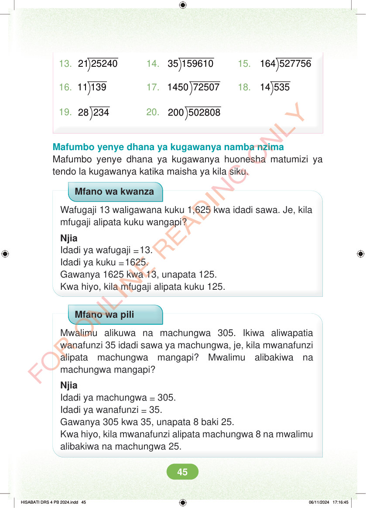

13. 21 25240 14. 35 159610 15. 164 527756 16. 11 139 17. 1450 72507 18. 14 535 19. 28 234 20. 200 502808 Mafumbo yenye dhana ya kugawanya namba nzima Mafumbo yenye dhana ya kugawanya huonesha matumizi ya tendo la kugawanya katika maisha ya kila siku. Mfano wa kwanza Wafugaji 13 waligawana kuku 1,625 kwa idadi sawa. Je, kila mfugaji alipata kuku wangapi? Njia Idadi ya wafugaji =13. Idadi ya kuku =1625. Gawanya 1625 kwa 13, unapata 125. Kwa hiyo, kila mfugaji alipata kuku 125. Mfano wa pili Mwalimu alikuwa na machungwa 305. Ikiwa aliwapatia wanafunzi 35 idadi sawa ya machungwa, je, kila mwanafunzi alipata machungwa mangapi? Mwalimu alibakiwa na machungwa mangapi? Njia Idadi ya machungwa = 305. Idadi ya wanafunzi = 35. Gawanya 305 kwa 35, unapata 8 baki 25. Kwa hiyo, kila mwanafunzi alipata machungwa 8 na mwalimu alibakiwa na machungwa 25. HISABATI DRS 4 PB 2024.indd 45 HISABATI DRS 4 PB 2024.indd 45 06/11/2024 17:16:45 06/11/2024 17:16:45